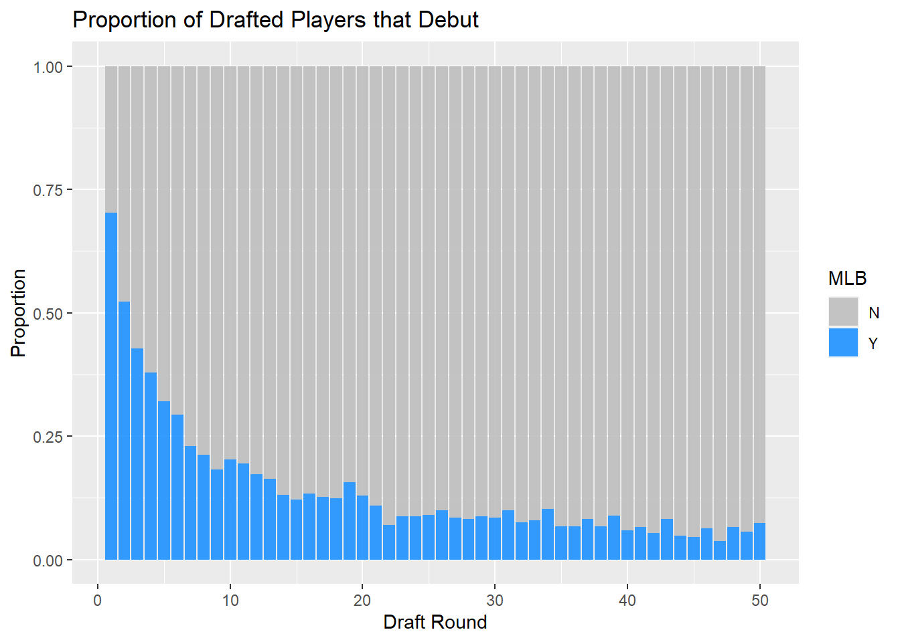

2 Exploratory Data Analysis
Before we build any models or perform any survival analysis, we will briefly explore the data set and look at how the chance of reaching the majors changes based on different factors. For this part of the project, we’ll mostly look at the subset of players who were drafted from 2000 to 2010 in order to allow sufficient time for players to debut.
Out of all the players who were drafted between 2000-2010 and played in the minors, only 18.8% reached the majors. Players drafted in the 1st round had the highest chance at 70.4%, and players drafted in the 2nd round had the second highest chance at 52.7%. The following bar graph shows in detail the proportion of players who reach the majors by round.

Next we’ll investigate what proportion of players are drafted out of high school vs college by round. Overall, 32.3% of drafted players are drafted out of high school. The bar graph below shows what proportion of players are drafted from high school vs college by round. Interestingly, we see that the proportion of players drafted out of high school decreases and then increases, with the highest levels in rounds 40-50. This may be because baseball teams are more willingly to take risks in later rounds since the probability of these players reaching the majors is so low anyway.
An ongoing debates among baseball analysts and front offices is whether to draft high school or college players. Some believe that only college players should be drafted because of the high amount of uncertainty involved with high schools players, and because teams should minimize risk. However, there appears to be a shift between when it is beneficial to draft college players and when it is beneficial to draft high school players:
One explanation for this is that the high risk / high reward of high schoolers is a disadvantage in earlier rounds, by an advantage in later rounds. In earlier rounds the risk of injury and washing out for high school players outweighs the benefit of starting in the minors sooner, but in later rounds starting earlier could be the difference between making it to the big leagues or not. High school players who sign on will be foregoing college and thus will be able to dedicate more time to baseball.
Finally, we will investigate the time from draft to debut among players. Here we will be using the debuts data set in addition to the draft data set. Also, we will only consider players drafted from 2005-2010, since 2005 is the earliest year for which we have debut information.
From the above density plot, we can see that high school players tend to debut 2-3 years after college players. The distribution within each group is roughly symmetric and unimodal. The mean and median time to debut for all players is 4.63 and 4.23 years respectively. The 95% quantile of debuts times is 8.12 years, which we will use later on in our analysis as a cutoff time for censoring individuals.